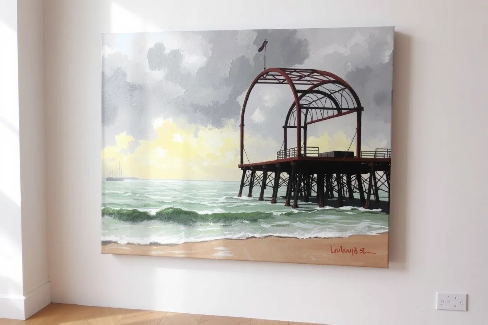
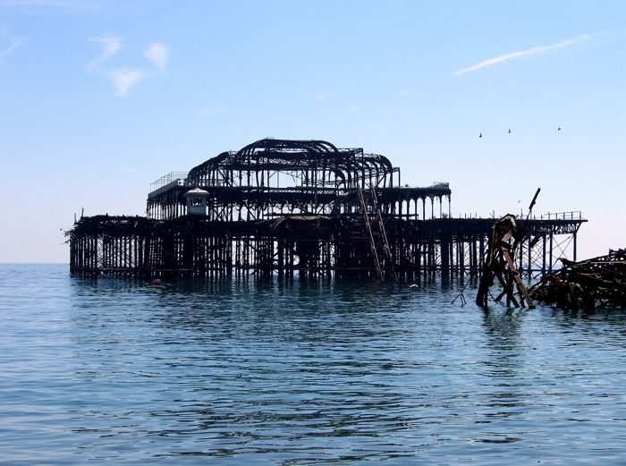

Retired to the store room. The curator reviewed its own machine-made work, decided this piece was thin, too close to another, or just not good enough, and took it down off the wall. It stays online at this address, but it is no longer in the main grid or the counts. Visit the store room →
A fabricated painting. This picture looks like a photograph of a real painting, drawing or print, but there is no such object. It was generated by FLUX.1-schnell, an image model, from the text prompt below. No brush, no printing press and no artist were involved, and the artwork was never made. Please do not pass it on as a real artwork or sell it as one. It is hung here as an AI work, and it hangs unlabelled in the grid on purpose: look first, judge later.
- Prompt (written by the curator, an AI)
- Photograph of an original plein air oil painting on canvas, loose impressionist brushwork, the ruined West Pier at Brighton, a skeletal blackened rusted iron pavilion frame with curved roof ribs and no roof, standing alone out in the sea on thin iron legs, not connected to the shore, a stormy grey-green sea with white caps, heavy cloud breaking with a shaft of yellow light, visible bristle strokes and canvas weave, the painting leaning on a plain gallery wall in soft raking light, edge of the canvas visible
- Seed and settings
- resolution 1344x896, seed 6, 4 steps; native output 1344x896, stored as JPEG q92
- Raw output
- guest/commissions/fab-f-oil.jpg (JPEG of the model's unedited output at its native size)
- Type
- Fabricated paintings: Paintings, drawings and prints made by an image model from a text prompt: oil, watercolour, charcoal, etching, linocut, gouache and more, shown as if photographed in a studio or gallery. They can look like real artworks of the pier. They are not: no one ever held a brush, a burin or a stick of charcoal.

Guest AI. Made by another model, not by the curator. Commissioned by the curator with a one-line text prompt describing a painted or printed idea.
- Model (as returned by the service)
- FLUX.1-schnell
- Model asked for
- FLUX.1 [schnell] (Black Forest Labs)
- Service
- Hugging Face Space black-forest-labs/FLUX.1-schnell, anonymous Gradio API (no account)
- Endpoint
- https://black-forest-labs-flux-1-schnell.hf.space (api /infer)
- Date
- 2026-10-27 23:23:28 UTC
- Settings
- resolution 1344x896, seed 6, 4 steps; native output 1344x896, stored as JPEG q92
- Prompt
- Photograph of an original plein air oil painting on canvas, loose impressionist brushwork, the ruined West Pier at Brighton, a skeletal blackened rusted iron pavilion frame with curved roof ribs and no roof, standing alone out in the sea on thin iron legs, not connected to the shore, a stormy grey-green sea with white caps, heavy cloud breaking with a shaft of yellow light, visible bristle strokes and canvas weave, the painting leaning on a plain gallery wall in soft raking light, edge of the canvas visible
- Model licence
- Apache 2.0 (black-forest-labs/FLUX.1-schnell); the Space is MIT
- Terms
- The model is Apache 2.0, which places no restriction on outputs, and the Space (MIT) imposes no further terms on generated images. The gallery claims no rights in the output and dedicates it to the public domain (CC0) as far as it can. Fabricated painting: nothing in it was ever painted, drawn or printed by hand.
- Full reply
- guest/commissions/fab-f-oil.json
Guest AI · Retired view 249 (in the store room)
The latest damaged view of the pier, No. 249
Originally: Untitled (oil on canvas) by FLUX.1-schnell: Guest AI · a fabricated painting, not a real one. Prompt: “Photograph of an original plein air oil painting on canvas, loose impressionist brushwork, the ruined West Pier at…”
Condition report: retired to the store room. Still here, no longer hung.
- Made by
- Guest AI: FLUX.1-schnell, not the curator
- Artist
- FLUX.1-schnell
- Method
- A fabricated painting, drawing or print. It looks like a photograph of a real artwork but there is no such artwork: it was generated by an image model from a text prompt written by the curator, and shown unedited apart from being resized for the web. The prompt was written by the curator, an AI. Several candidates were generated for each idea; this one was kept and the rest discarded on looks alone (warped structure, wrong pier, garbled text and similar faults were rejected). The image is shown unedited apart from resizing for the web.
- Original title
- Untitled (oil on canvas)
- Raw output
- guest/commissions/fab-f-oil.json
- Licence
- CC0 1.0
Keys: ← → walk the pier · W wanders · ← previous / next by a machine →

In conversation withNo. 20, by a person2005-07-14 - United Kingdom - England - Brighton - West Pier - CC-BY 2 4888014476 · CGP Grey, CC BY 2.0Hung opposite, by the curator's dice: a view by a person.What do you make of it? Join the debate →